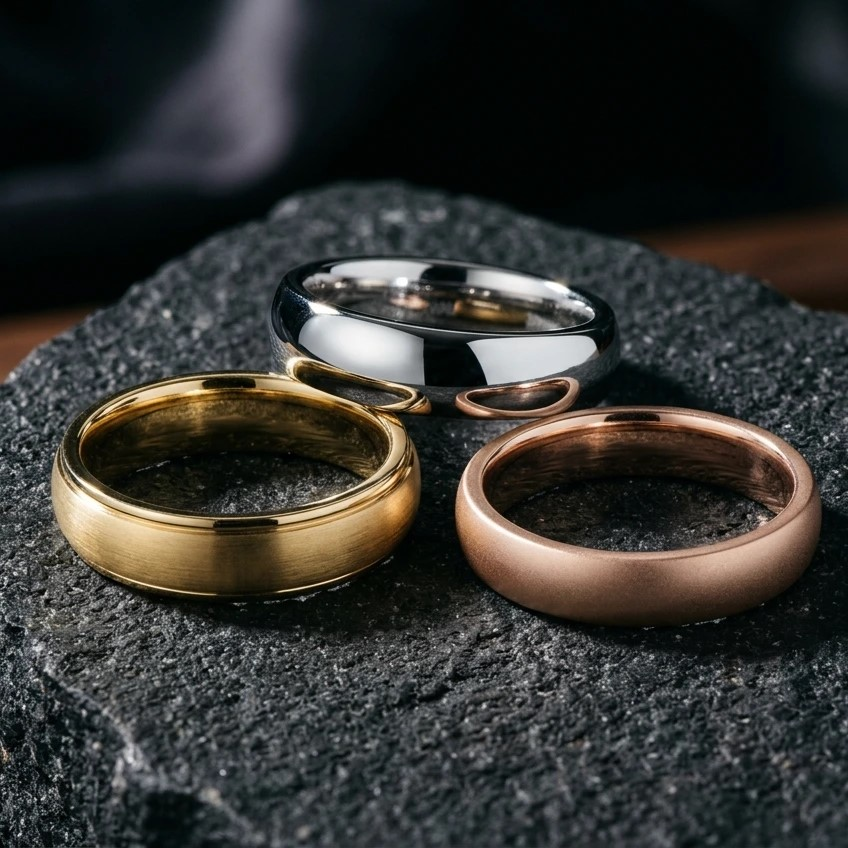
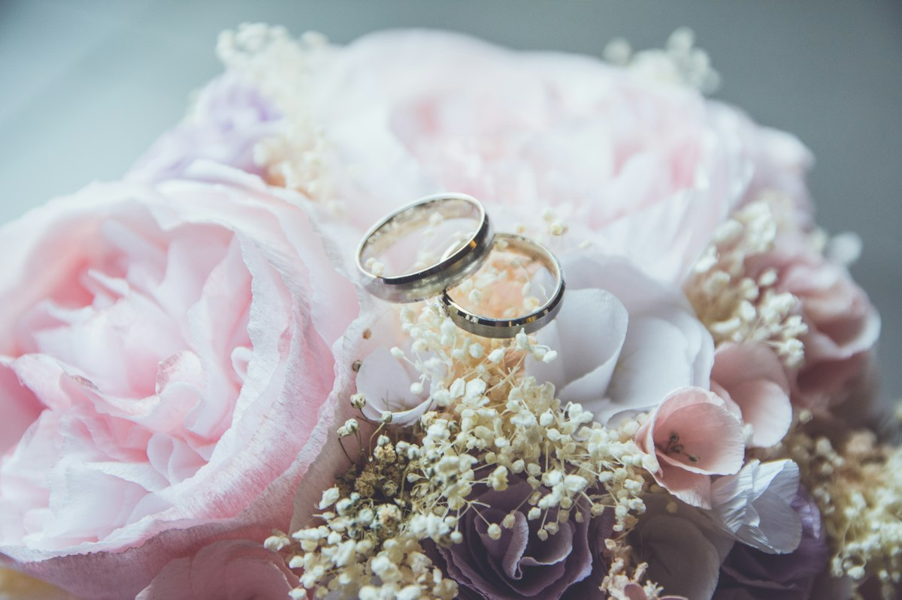

Shopping for your wedding rings is one of the most exciting milestones of your engagement. While floral centerpieces and catering menus fade once the party wraps up, your wedding rings remain on your hand for decades. They accompany you through busy workdays, weekend workouts, quiet mornings, and lifetime celebrations.
Yet because fine jewelry purchasing is new ground for most couples, it is surprisingly easy to make avoidable blunders. Sizing errors, mismatched metal alloys, uncomfortable band profiles, and rushed choices often lead to frustration and costly repairs. Understanding these common wedding ring mistakes early will protect your budget, safeguard everyday comfort, and ensure you pick forever rings you genuinely adore.
1. Guessing Ring Size or Using Paper Sizers
Relying on printable paper strips or phone apps is a frequent sizing pitfall. Finger size fluctuates naturally throughout the day with temperature changes, humidity, physical activity, and hydration.
A ring measured on a cold winter morning will feel tight on a warm summer afternoon. In addition, resizing wide bands or delicate pavé settings repeatedly can weaken metal prongs and loosen gemstones.
Real-World Example
A groom used a printable paper sizer late at night and ordered a size 9 ring. Upon arrival, the band would not clear his knuckle, forcing an urgent bench jeweler resize two days before the wedding.
Have your fingers measured by an experienced jeweler using calibrated metal sizing bands. Take measurements in the late afternoon across the widest part of your knuckle for an accurate fit.

2. Overlooking Daily Lifestyle and Occupational Durability
Falling in love with an ultra-delicate setting under boutique spotlights without considering your everyday routine causes quick regret. If your profession or hobby involves manual work, healthcare gloves, gardening, or gym weights, fragile rings will snag, bend, or scratch easily.
Your wedding ring should seamlessly support how you live. If you constantly feel terrified of bending your ring, it ceases to be a joyful daily keepsake.
Real-World Example
An avid rock climber chose a thin 1.3mm band with exposed prongs. Within four months of gym bouldering, two accent diamonds popped loose from direct impact against metal and stone holds.
Assess your hands-on activity honestly. If you use your hands heavily, choose durable low-profile bezel or channel settings, or smooth solid metal bands. Keep a silicone band handy for heavy workouts.

3. Choosing the Wrong Metal Alloy for Your Needs
Many buyers pick metals based purely on surface color, overlooking long-term metallurgy, maintenance, and skin sensitivities. For example, 18k gold is rich in color but noticeably softer than 14k gold, making it more prone to scuffs.
White gold requires periodic rhodium replating to preserve its silvery white finish. Furthermore, alternative contemporary metals like tungsten and titanium are highly scratch-resistant but cannot be resized if your finger changes size.
Real-World Example
A bride with sensitive skin purchased a cheap nickel-alloy white gold band. Within weeks, the thin plating wore away, causing an itchy contact dermatitis rash along her ring finger.
Select metals that match your lifestyle and allergy needs. Choose platinum or quality sterling silver for hypoallergenic peace of mind, or 14k gold for enduring everyday balance. Understand resizing limitations before selecting alternative metals.

4. Skipping a Realistic Wedding Ring Budget Early
Couples often concentrate the bulk of their wedding finances on reception venues, bridal dresses, and engagement gems. Wedding rings are frequently neglected until the final weeks before the ceremony.
Leaving bands as an afterthought forces hasty compromises, such as buying hollow lightweight shanks or incurring expensive rush delivery charges.
Real-World Example
A couple waited until three weeks before their ceremony to shop for rings. Having depleted their cash on catering, they had to put high-interest credit charges on last-minute bands.
Designate 3% to 5% of your total wedding budget for bands early in the planning process. Setting dedicated ring funds aside enables you to select solid gold weights, quality stones, and custom engraving comfortably.
5. Choosing Passing Micro-Trends Over Timeless Style
Social feeds regularly highlight delicate micro-trends, such as razor-thin 1.2mm bands or dark surface coatings. While eye-catching online, ultra-thin bands deform under modest pressure and cannot hold gemstones securely over time.
Similarly, matte or oxidized finishes inevitably wear down to polished shiny surfaces with daily friction, necessitating regular re-finishing.
Real-World Example
A bride bought a 1.2mm pavé band popularized on Instagram. After six months of gripping heavy groceries, the band warped into an oval and lost two tiny diamonds.
Opt for lasting structural strength. Seek bands with a minimum width of 1.8mm to 2.0mm to guarantee adequate metal thickness. Choose shapes and finishes that reflect your authentic personal taste rather than fleeting viral trends.

6. Overlooking Comfort-Fit Interior Geometry
Many shoppers evaluate rings solely from the exterior, neglecting the interior surface resting against the skin. Standard-fit bands have flat inner surfaces with sharp edges that pinch skin and trap moisture on wider profiles.
Comfort-fit rings feature a domed, convex interior curvature. This ergonomic profile glides smoothly over knuckles and minimizes friction against skin tissue, delivering superior daily comfort.
Real-World Example
A groom purchased a 7mm wide flat-interior band. Routine handwashing caused moisture to become trapped underneath, leading to skin chafing until he upgraded to a domed comfort-fit band.
Always request comfort-fit styling, especially for rings 4mm wide or greater. Because comfort-fit rings slide on more easily, test half-sizes in person to determine your ideal ergonomic fit.

7. Failing to Harmonize the Band with the Engagement Ring
Purchasing a wedding ring without testing its fit alongside your engagement ring is an all-too-common misstep. If an engagement ring has a low basket, a straight wedding band creates an awkward gap and prevents a flush fit.
Moreover, pairing metals of differing hardness results in abrasive wear. A tough platinum band worn beside an 18k yellow gold engagement ring will gradually grind down the softer gold prongs over time.
Real-World Example
A bride ordered a straight channel band online. Paired with her low-set halo ring, it rubbed continuously against the basket prongs, creating an unsightly gap and deep scratches.
Always take your engagement ring to ring appointments. If your center stone sits low, choose curved, chevron, or contoured bands tailored to sit flush. Match metal karats to avoid uneven friction and premature wear.

8. Neglecting Dedicated Ring Insurance and Maintenance
Couples frequently assume standard homeowners or renters policies fully cover their wedding jewelry. In reality, basic coverage often caps jewelry claims low and excludes accidental losses occurring away from home.
Skipping periodic inspections is equally hazardous. Everyday bumps can gradually shift delicate prongs, leading to lost stones without immediate notice.
Real-World Example
A groom went swimming in the ocean on his honeymoon. Cool water caused his finger to contract, slipping his new ring into deep water. Without a jewelry insurance rider, the entire loss was out-of-pocket.
Obtain specialized jewelry insurance or an inland marine policy rider prior to your wedding day. Visit a trusted bench jeweler annually for prong checks, and clean rings regularly with mild dish soap and a soft brush.
9. Rushing Your Purchase at the Last Minute
Putting off your ring search is an unnecessary source of bridal stress. Fine jewelry involves precise craftsmanship: sizing, laser engravings, custom alloy casting, and rigorous quality checks require four to eight weeks.
Waiting until the final month severely restricts your selection to whatever items happen to be in retail showcases, eliminating custom width and profile opportunities.
Real-World Example
A couple visited jewelers ten days before departing for their destination ceremony. Needing a custom size 13.5 platinum band, they were forced to pay steep rush production fees.
Start shopping four to six months before your wedding, placing orders at least eight to ten weeks ahead. This buffer accommodates fitting tweaks, custom engraving, and stress-free delivery.
10. Buying Without Checking Return Policies and Warranties
Purchasing wedding bands without verifying return and warranty terms is a risky gamble. Many retailers treat custom-engraved rings, custom widths, and full eternity bands as non-returnable final sales.
If a ring arrives ill-fitting or fails to meet expectations, strict terms can leave you stuck with an unwearable ring and extra expenses.
Real-World Example
A buyer ordered a customized eternity ring online from a discount retailer. It arrived a quarter-size too snug, but because custom sales were strictly final, the couple had to buy an entirely new band elsewhere.
Always buy from reputable jewelers offering clear 30-day exchange policies and warranty protection for manufacturing defects. Wait to apply permanent custom engravings until you have tried the ring on in person and confirmed its fit.
Frequently Asked Questions
How far in advance should we purchase our wedding rings?
Start browsing four to five months before your wedding date, and place your order at least eight to ten weeks prior to the ceremony. This ensures adequate time for custom sizing, engravings, and adjustments.
Can all wedding rings be resized in the future?
Traditional precious metals like gold, platinum, and sterling silver are easily resized by professional jewelers. In contrast, metals like tungsten and titanium cannot be resized, and full diamond eternity bands are generally impossible to adjust.
Do wedding bands have to match each other?
No. Modern couples often choose different metals, band widths, and textures that reflect their individual styles, comfort preferences, and lifestyles. Complementary bands offer both personality and practicality.
Should our wedding rings be insured immediately?
Yes. Arrange jewelry insurance or a dedicated property rider the moment you take possession of the rings. Comprehensive policies cover accidental loss, damage, and theft worldwide.
Finding Your Forever Rings with Confidence
Choosing your wedding rings is a meaningful journey combining timeless romance with everyday practicality. By steering clear of these common wedding ring mistakes—such as guessing ring sizes, ignoring daily lifestyle demands, and skipping long-term metal care—you will make a confident, enduring choice.
Take time to test different widths and profiles together, and work with knowledgeable jewelers who prioritize long-term wearability. When selected with care, your wedding rings will serve as radiant symbols of your devotion that feel just as comfortable decades from now as they do on your special day.